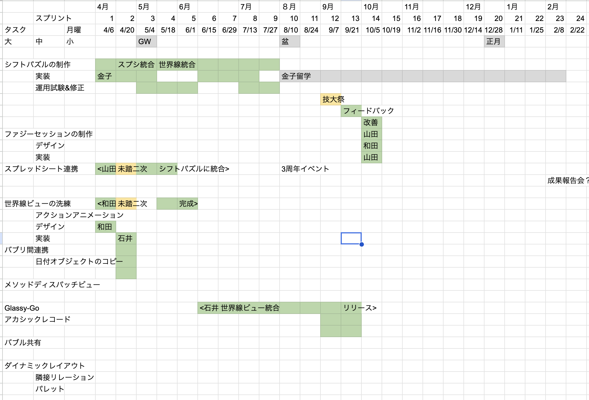

プロジェクト名：オブジェクトを創造的に組合可能なコンピューティングパラダイム
提案者名：石井将文、山田暉、金子拓朗、中野楽士、和田木綿子
人間がコンピュータに本来期待していることとは、「自分の頭の中にある概念を、期待どおりに操作すること」である。文書、表、予定、人——これらはすべて人間が認識し操作したい「オブジェクト」であり、コンピュータが使いやすいとは、このオブジェクトが直感どおりに動くことに他ならない。
しかし、これまでのコンピューティングは、技術的制約やビジネス上の都合により、ユーザーに許されるオブジェクト操作の自由を二つの方向から制限してきた。
空間的制限——アプリという壁
ローカルでもクラウドでも、オブジェクトは「アプリ」「サービス」「サイト」という壁の中に閉じ込められている。一つのプロジェクトを遂行するために、ユーザーは幾つものアプリを行き来しなければならない。連携手段はコピー&ペーストかファイル経由に限られ、それ以上を望めばプログラミングが必要になる。機能ごとに分断された画面は固定的で、ユーザーの関心事ではなくソフトウェアの都合で空間が切られている。
クラウドコンピューティングはさらに、データの主権をプラットフォーマーに移転させた。ユーザーは便利さと引き換えに、自分のデータが自分のものであるという感覚を失いつつある。サービスは道具ではなく、ユーザーを囲い込む装置になった。
時間的制限——不可逆な操作の恐怖
「元に戻す」はアプリケーション依存であり、実装は不完全である。時間軸は一軸しかなく、過去に戻って別の操作をすれば、元いた「現在」には二度と戻れない。ファイルを閉じれば履歴は消える。gitは複数の分岐を扱えるが、それはプログラマのためのテキスト管理であり、一般のユーザーが日常的に扱えるものではない。
AI時代はこの問題をさらに深刻にする。AIエージェントが一瞬で大量の変更を加えたとき、何が行われたのかを人間が把握し、必要に応じて巻き戻し、別の可能性を試すための手綱が存在しない。
本プロジェクトは、ローカルコンピューティングとクラウドコンピューティングを包含する新しいパラダイム「バブルスコンピューティング」を構築する。
その核心は、ソフトウェアを「サービス」から「道具」に戻し、組み合わせの自由をユーザーに返還することである。
バブルスコンピューティングでは、オブジェクト（人間が認識し操作したい対象のモデル）を中心に据え、空間的にも時間的にも自由な操作を可能にする。具体的には以下の三つの柱に基づく。
未踏期間中に、バブルスコンピューティングの有用性を実証するWebアプリケーション「bublys」を社会実装する。具体的には以下のバブリ群を開発し、実務での業務改善効果を検証する。
| 観点 | 既存SaaS（Notion, Asana等） | bublys |
|---|---|---|
| データの所在 | プラットフォーマーのクラウド | ローカル優先、選択的にクラウド |
| アプリ間連携 | API連携（開発者が実装） | ドラッグ&ドロップで誰でも |
| 元に戻す | アプリ依存、一軸 | DAGベース、分岐可能、永続的 |
| 拡張性 | プラグイン（制限あり） | バブリ（対等な道具の組み合わせ） |
| 設計思想 | 囲い込みによる収益化 | 道具としての自由を返還 |
1. オブジェクトの直接操作——「〇〇画面」をなくす
従来のGUIには「設定画面」「一覧画面」「編集画面」といった、ソフトウェア側の都合による画面遷移が存在する。バブルスコンピューティングでは、ユーザーが「できるはずだ」と直感的に思うことは必ずその場でできるようにする。オブジェクトそのものが操作のインターフェースであり、画面遷移という概念を解体する。
2. 奥行きを活用した3次元的レイヤードUI
従来のウィンドウシステムは、画面を2次元的に分割・重畳するにすぎない。bublysでは奥行き（z軸）を本質的に活用する。前面のバブルを開くと、それまで見ていたバブルは奥に小さく残る。ユーザーは「いま何の文脈にいるのか」を空間的に把握でき、戻りたい場所が視覚的に見えている。これは単なるUI技法ではなく、人間の空間認知能力をコンピューティングに活かす設計哲学である。
3. 世界線システム——gitのモデルをアプリケーション状態に適用する
gitのブランチ・コミットモデルが持つ「任意の時点への回帰」「分岐による並行探索」「マージによる統合」という強力な概念を、プログラマだけでなくすべてのユーザーが、あらゆるオブジェクトに対して使えるようにする。
技術的には、Content Addressable Storage（CAS）とDAG（有向非巡回グラフ）を組み合わせた独自のデータ構造を設計した。すべてのオブジェクトの状態変更はハッシュベースで保存され、操作ごとにDAGノードが自動生成される。ユーザーは意識することなく、あらゆる操作が自動的にバージョン管理される。
これにより、AIエージェントが行った変更の把握・巻き戻し・分岐比較が可能になり、AI時代における人間の「手綱」として機能する。
4. バブリ——アプリの壁を超える疎結合な道具の生態系
バブリは、従来のアプリケーションとは異なる設計原則に基づく。各バブリは独立したドメインモデルを持ちながら、標準的なデータ形式（PlaneObject）とドラッグ&ドロップにより、互いの実装の詳細を知ることなくデータを受け渡せる。これは、UNIXのパイプがテキストストリームで異なるプログラムを繋いだように、GUIの世界でオブジェクトの受け渡しによって異なる道具を繋ぐ思想である。
総じて、人類のコンピューティングがよりスムーズで、安心できるものになる。
bublysは既に動作するプロトタイプが存在する。以下が実装済みである。

| 課題 | 解決策 |
|---|---|
| 世界線データの肥大化 | CASによる重複排除、IndexedDBでの階層的GC |
| バブリ間の型安全なデータ連携 | ドメインレジストリによる実行時型解決 + PlaneObjectによる疎結合連携 |
| 一般ユーザーへの世界線概念の理解促進 | DAGの視覚的表現の工夫、自動コミットによる透過的バージョニング |
Claude Codeをはじめとするコーディング支援AIの登場により、コーディングのハードルは大幅に下がった。現在、bublysを制作するメンバーに求められるのは、プログラムの実装力以上に、bublysのヴィジョンへの深い理解と共感、そしてソフトウェアアーキテクチャの基礎力である。以下、各メンバーをプロジェクトへの参加順に紹介する。
石井 将文（ふみコード代表・提案者・開発リーダー）
電気通信大学大学院 情報理工学研究科 総合情報学専攻修了。ARLISS（缶サット大会）優勝。教育系スタートアップにて生徒・講師向けポータルの開発リーダーを2年半務め、DDDに基づく大規模Webアプリケーション設計の実践を積んだ。フリーランスエンジニアとして、技術・デザイン・ドメイン理解のすべてを横断する提案力を強みとする。本プロジェクトでは、bublysの体系的なアーキテクチャ設計とコア基盤開発を担う。
山田 暉
Unity/C#でのゲーム開発4年、ReactでのWebアプリ開発1年、FlutterでのiOS/Androidアプリ開発の経験を持つ。DDD・クリーンアーキテクチャへの深い理解があり、モジュール間の依存関係が整然としていなければ納得しない気質が、bublysのアーキテクチャ品質を支える。ゲーム開発で培ったリアルタイム同期やP2P通信の実装経験は、世界線システムのマルチユーザー同期に直結する。
金子 拓朗（長岡技術科学大学 工学部 情報・経営システム工学分野）
高専でC言語によるアルゴリズム構築の基礎を習得し、Next.js/Supabase/DockerによるモダンWeb開発、C#での3Dゲーム開発、PyTorchでの動画解析など幅広い技術領域を実践してきた。自ら開発したサービスで企業との契約締結・実証実験を2回実施した経験を持ち、技術開発から現場運用・フィードバック改善までのサイクルを独力で回せる行動力がある。現在、bublys上でシフトパズルバブリの社会実装に取り組んでおり、所属大学の実行委員会組織での検証を準備中である。
中野 楽士（長岡工業高等専門学校 電子制御工学科）
中学生から独学でプログラミングを始め、花火コネクト、Eventapo、PioneOS（Linuxディストリビューション）など多数のプロダクトを開発。Startup Weekend長岡2024優勝、Ent-X 2025地域起業DX賞受賞。フロントエンドとバックエンドの両方を高い水準で実装でき、開発とデザインの複眼的な視点を持つ。「画面の仮想的なものは現実世界により近くあるべき」という信念は、bublysの設計哲学と深く共鳴する。
和田 木綿子（デザインヨンド代表）
美術大学デザイン学科卒業後、約10年間にわたりUI/UXデザイン、ブランド設計、マーケティング施策を一貫して手がけてきた。建築哲学ゼミで現象学とデザインの関係を学んだ背景から、「道具」としてのソフトウェアのあり方に独自の思想を持つ。現在の多くのツールが使いやすさを追求するあまりユーザーの思考を枠にはめてしまっている問題を指摘し、「平均ではない豊かな発想を柔軟に許容し拡張するUI」の実現を目指す。デザイナーでありながらコーディングの経験もあり、Web技術の制約を理解した上でのUI設計ができる。
全員がWeb開発の実務経験を共有しつつ、それぞれが異なる強みでプロジェクトを支える。石井の体系的なアーキテクチャ構想、山田のコード品質への妥協なき姿勢、金子の顧客に物怖じしない行動力、中野のデザインと実装を貫くバランス力、和田の道具の本質を問う哲学的眼差し——この5名の組み合わせにより、bublysの「道具としての自由」を技術と思想の両面から実現できる体制が整っている。
「SaaSの死」が現実味を帯びている。
Claude CoworkやOpenClawといったAIエージェントの出現により、SaaS業界は転換期を迎えている。ユーザー単位の課金モデルは、AIが簡易にアプリケーションを生成できる時代には成り立たなくなりつつある。固定的な画面は窮屈に感じられるようになるだろう。
既存のSaaSは、あらゆる機能を詰め合わせてユーザーを大きく囲い込もうとする。幼稚園管理ならkodomon、企業ERPならSAPというように、ドメインごとに巨大なサービスが典型的な業務フローに合わせた形で提供される。しかし、現場の運用に完璧に合うことはなく、むしろソフトウェアにより本来の業務フローが歪められることすらある。
しかし、GUIは死なない。
音声だけですべてを操作するという最近の潮流は極端すぎる。現状のPCユーザーがAIエージェントを使いこなせるのも、これまでのGUI体験で培った判断モデルがあるからである。チャットで話しかける入口だったとしても、それに対して適切なオブジェクトのビジュアル表現が出てくるべきであり、自動プロセスの途中であっても人間が介入できるインターフェースが必要である。bublysは、ビジュアル表現を維持しつつ、マウス・タッチ・音声のマルチモーダルで操作できる設計を目指す。
ソフトウェア制作コストの低下が新しいソフトウェアの形を生む。
vibeコーディングにより誰もがミニアプリを作れる時代になったが、作ったアプリ同士のつなぎこみが困難で、実務では使えないことが多い。bublysはバブリという疎結合な単位と標準的なデータ連携を提供することで、このつなぎこみの問題を解決する。微妙な書式や情報の違いはAIが吸収してくれる。
この先のソフトウェアの形とは、バブリのように必要十分で単機能なものを、ユーザーやエージェントが自由に組み合わせる使い方であろう。bublysはそのフレームワークとエコシステムを提供する。
さらに、ソフトウェア制作コストの低下は、UIの質を劇的に向上させる。これまでは実装コストの問題で諦めていた、わかりやすく直感的なUIが実現可能になる。わかりやすさの究極とは、使っているだけで学べるUIである——ちょうど、カレンダーが週7日という概念を教え、時計が24時間の時間の切り方を教えるように。ドメインの構造を人間が理解するのを助けるようなUIが好まれるはずである。
価値そのものへの課金。
bublysの思想は「北風と太陽」でいう太陽である。不便さで脅してコントロールするのではなく、便益の提供によりユーザーの自律的行動を促し、その自由を提供すること自体が価値となる。ツール自体の提供する価値——わかりやすさ、自由度——に対して課金するモデルへの転換である。
従来のSaaSのユーザー単位課金に代わる、新しい課金の形を提案する。
bublysの競合は、個別のSaaS製品ではなく、SaaSという概念そのものである。
| 観点 | 既存SaaS（Notion, Asana等） | bublys |
|---|---|---|
| データの所在 | プラットフォーマーのクラウド | ローカル優先、選択的にクラウド |
| アプリ間連携 | API連携（開発者が実装） | ドラッグ&ドロップで誰でも |
| 元に戻す | アプリ依存、一軸 | DAGベース、分岐可能、永続的 |
| 拡張性 | プラグイン（制限あり） | バブリ（対等な道具の組み合わせ） |
| 設計思想 | 囲い込みによる収益化 | 道具としての自由を返還 |
想定するターゲットは、最終的には全コンピュータユーザーである。当面は、DXの余地を残す中小企業をターゲットとする。既存の大規模SaaSでは対応しきれない現場固有の業務フローに対して、バブリの組み合わせによる柔軟なソリューションを提供する。
バブルスコンピューティングは、既存のアプリという枠組みを解体し、ユーザーの利便性を第一に考えるコンピューティングパラダイムである。しかし、既存のOSやアプリ生態系を一気に置き換えることは容易ではない。
そこで、Webアプリケーションとして動作するbublys（https://bublys.ooo）上で具体的なアプリケーションを制作し、「これまでよりも使いやすい」ことをまず証明する。
最初の実証対象はシフト管理である。長岡技術科学大学の技大祭では、一人の担当者がスプレッドシート上で長時間かけてシフトを組んでいる。複数の制約条件やスタッフの希望というトレードオフを、すべて頭の中で解決している。まさにこのようなドメインこそ、オブジェクトの直接操作と世界線分岐によるシミュレーションというbublysの思想が活きる。スタッフをどこで何に配置するかという課題は、どんな業界にも存在する普遍的な問題であり、横展開の可能性が大きい。
1. オープンソースによるエコシステム拡大 + DXコンサルティング
バブリ開発SDKをオープンソースで公開し、開発者コミュニティを育てる。その上で、個別の企業に対してはバブリを使ったDXコンサルティングを提供する。バブリの境界を超えた連携特性により、既存の業務システム資産を活用しつつ新しいシステムをインテグレーションできることが強みとなる。
2. バブリの新しい課金システム
⑤で述べたオブジェクト利用課金・成果課金・参加課金・フロー課金を組み合わせた、水のように流れる課金システムを構築する。課金の状況はそれ自体がバブリとして可視化され、ユーザーが自分の利用状況を直感的に把握できる。
3. 作業を邪魔しない広告
無料バブリを使用するユーザーに対しては、作業の邪魔にならない形で広告を表示する。バブリの使用頻度に応じて広告提供の機会が生まれ、ユーザーが一息ついたタイミングで広告枠を提供する。
4. バブリのレコメンド
作業の文脈に応じて、関連するバブリをレコメンドする。たとえば、プレゼンテーション資料を作成中のユーザーに画像制作バブリを提案するなど、ユーザーの作業フローに沿った自然な形で新しいバブリとの出会いを創出する。
| 期間 | 開発 | 事業化 |
|---|---|---|
| 7〜8月 | コア基盤強化、シフトパズルバブリ開発 | ターゲットユーザーへのヒアリング |
| 9〜10月 | リソース管理バブリ、バブリ間連携拡張 | 実証実験の場の確保・開始 |
| 11〜12月 | UI/UX改善、時間管理バブリ | 実証実験のフィードバック反映 |
| 1月 | 成果統合、XR概念実証 | 事業計画の精緻化、成果発表 |
1年目: シフトパズルを起点としたB2B展開
シフトパズルバブリを中心に、イベント運営・教育機関・中小企業向けのシフト管理ソリューションを提供する。同時に、DXコンサルティングとして、個別企業の業務に合わせたバブリの組み合わせ提案・カスタム開発を行う。この段階でバブリの課金システム（フロー課金等）の実証を開始する。
2年目: バブリマーケットプレイスとSDK公開
バブリ開発SDKを公開し、外部開発者がバブリを制作・販売できるマーケットプレイスを開始する。汎用バブリ群の充実により、より多くの業務ドメインに対応可能な状態を目指す。開発者コミュニティの育成と、バブリ間連携の標準仕様の策定を進める。
3年目: プラットフォームの拡張
bublysブラウザ（スタンドアロン版）をリリースし、Web版の制約を超えたネイティブな体験を提供する。並行してXR版bublysの本格開発に着手し、奥行きUIの設計思想を3D空間へ拡張する。
事業期間: 7月〜1月（7ヶ月間）
※具体的な金額は別途算定
（該当する場合に記載）